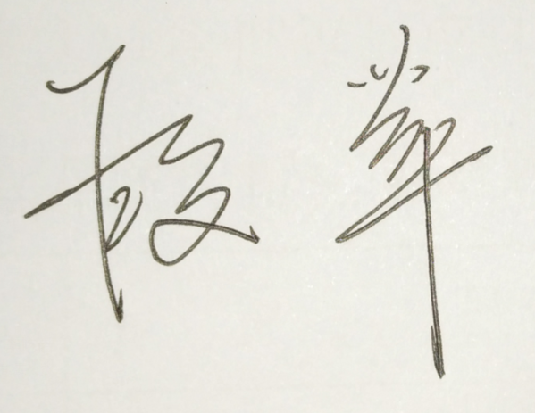

段苹/DuanPing
武汉海关缉私局查私处副处长 Anti-smuggling Bureau of WUHAN Customs
武汉海关缉私局查私处副处长 Anti-smuggling Bureau of WUHAN Customs
Helo, I’m DUANPING!
我叫段苹，现任武汉海关缉私局查私处副处长。我于1992年6月在华中师范大学取得英国语言文学学士学位，后在华中科技大学取得法学硕士学位。本科毕业后，我进入长江航运公安局出入境管理处工作。1999年我被选调入新成立的武汉海关缉私局，工作岗位轮换过办公室、督察处、侦查处、查私处、法制处、缉私科、缉私分局等几乎所有的部门。
Helo, I’m DUANPING!
I’m DUANPING from Anti-smuggling Bureau of WUHAN Customs. I also have an English name Margaret, which was named by my foreign teacher when I was a sophomore majoring in English 29 years ago in HUAZHONG NORMAL UNIVERSITY. Otherwise, I got the Master’s Degree of Law in HUAZHONG SCIENCE&TECHNOLOGY UNIVERSITY. After my graduation of the bachelor’s degree, I was enrolled by the Public Security Bureau of Changjiang Water-carriage, and served as a foreign-affair-police in the Division of Entry&Exit Administration. In 1999, I was chosen to transfer to the newly-founded Anti-smuggling Bureau of Wuhan Customs, and served as an anti-smuggling police in almost all divisions like office, supervision, legal affairs, criminal investigation, administrative investigation and in subordinate customs(like the Airport Customs) and subordinate anti-smuggling bureau.

1995年我参加了第四次世界妇女大会的安保工作，对我来说这是一个难得的与联合国安保部一同工作的经历
I participated in the safe guard of the UN Fourth Conference on Women in 1995 and that was a unique opportunity for me to work with the UN Security Department.
2004年我作为会议代表和翻译参加了海关总署在武汉举办的湄公河流域海关合作研讨会；
I attended the seminar of the cooperation and coordination along River Mekong (which was held in Wuhan by GACC) and acted both as a delegator and an interpreter in 2004.
2015年、2016年，我有幸陪同外交部、公安部、总署缉私局的有关领导赴秘鲁开展走私犯罪嫌疑人的引渡谈判，该引渡是中国从美洲成功引渡的第一
2015 and 2016 year before last I fortunately accompanied several leaders from the Ministry of Foreign Affairs, the Ministry of Public Security and General Anti-smuggling Bureau to negotiate an extradition of a smuggler in Peru. This successful extradition is the first one for China to extradite criminals from the American continent.
经常作为翻译参加武汉海关的外事活动
I often figure as an interpreter and translator in the foreign affairs of Wuhan Customs.
我是英语学士、法学硕士，专业教育赋予了我处理法律事务的能力，包括使用英语执法
I majored in English in bachelor’s degree and law in master’s degree. The professional education provided me the capability to deal with legal affairs, even in English.
我的反走私经验丰富，我在缉私局几乎所有的部门都工作过，打击濒危野生动植物走私和“洋垃圾”走私等非涉税走私是我日常工作的重要内容，我对这些领域都很熟悉。
I’m an experienced anti-smuggling police. I have transferred almost all the positions in the anti-smuggling bureau. And anti-smuggling of endangered species of wild fauna&flora and foreign garbage are important tasks in my daily work. I’m familiar with these fields.
我的工作经历训练了我良好的沟通协调能力，而作为业务处分管业务工作的副处长，我也有一定的组织能力。
my experience practiced me much on the skill of communication and coordination. And as the deputy director who is in charge of business, I also have the capacity of organization.
我认为女性更具有亲和力，这将非常有助于我履行职责。
I take it for granted that females are more easy charm. This will help me much in the performance of my duties.